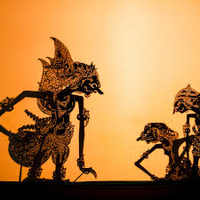
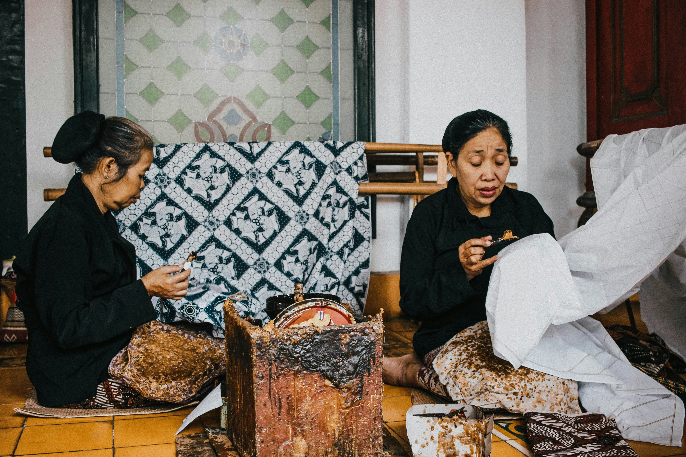

Kebudayaan Indonesia
Indonesia, negara kepulauan dengan lebih dari 17.000 pulau, memiliki budaya yang kaya dan beragam, bagaikan permadani yang ditenun dari berbagai benang pengaruh selama berabad-abad. Warisan budaya ini terlihat dalam berbagai aspek kehidupan masyarakat Indonesia, mulai dari seni dan kuliner yang semarak hingga bahasa dan agama yang beraneka ragam.
Tradisi seni Indonesia beragam seperti halnya masyarakatnya. Tari tradisional seperti Legong yang anggun dari Bali dan Kecak yang energik memikat para penonton. Wayang Kulit, seni pertunjukan bayangan, memikat dengan cerita yang rumit. Batik, metode pencelupan kain dengan menggunakan malam, menghiasi kain dengan pola yang memukau. Bentuk-bentuk seni ini mencerminkan hubungan erat Indonesia dengan warisan budayanya.
Tari Kecak
Tari Kecak merupakan salah satu seni tari nusantara terkenal yang berasal dari Bali. Seni tari ini biasanya dipertunjukkan secara massal oleh puluhan bahkan ratusan penari laki-laki yang duduk dengan pola melingkar. Dinamakan tari Kecak, karena pada saat irama musik dimainkan, para penari akan mengangkat dan menggerakkan kedua lenganya sambil menyerukan kata "cak ke cak ke cak". Para penari akan mengenakan kostum bermotif kotak-kotak putih hitam, mirip dengan pola papan catur.

Wayang Kulit
Wayang kulit adalah seni tradisional pertunjukan bayangan dari Indonesia, khususnya di Jawa. Pertunjukan wayang kulit menggunakan boneka kulit yang dipotong tipis dan dicat, yang dipasang di belakang layar putih berpencahayaan. Wayang kulit merupakan bagian integral dari budaya Jawa dan sering digunakan untuk menceritakan cerita-cerita epik dari mitologi Hindu seperti Ramayana dan Mahabharata, meskipun ada juga cerita-cerita lokal dan kisah-kisah lain yang digunakan.
Tari Saman
Tari Saman merupakan tarian yang berasal dari suku Gayo dan biasanya ditampilkan dalam suatu perayaan penting di suatu peristiwa adat. Syair pada tariannya juga mempergunakan Bahasa-bahasa Gayo. Selain itu tarian ini juga kerap ditampilkan saat merayakan hari raya kelahiran Nabi Muhammad SAW. Beberapa literatur menyatakan Syekh Saman yaitu seorang ulama yang berasal dari Suku Gayo di Aceh Tenggaralah yang kemudian menemukan dan mendirikan tari Saman hingga akhirnya ditetapkan oleh UNESCO sebagai Daftar Representatif Budaya Takbenda pada 24 November 2011 silam.

Batik
Pada tahun 2009, batik diakui oleh UNESCO sebagai Warisan Kemanusiaan untuk Budaya Lisan dan Nonbendawi (Masterpieces of the Oral and Intangible Heritage of Humanity), yang menunjukkan nilai budaya dan sejarah yang mendalam dari seni tekstil ini. Dengan demikian, batik merupakan warisan budaya yang penting bagi Indonesia, tidak hanya sebagai seni tekstil yang indah tetapi juga sebagai bagian dari identitas dan nilai-nilai budaya bangsa.
Gamelan
Gamelan adalah ansambel musik tradisional Indonesia yang terdiri dari berbagai jenis instrumen perkusi, seperti gongs, metallophone (saron, gender, dan slenthem), kendang (drum), gong ageng (gong besar), dan berbagai alat musik lainnya. Ansambel gamelan dapat mencakup puluhan hingga lebih dari seratus instrumen, tergantung pada jenis gamelan dan tradisi musiknya.
Wisata Terbaik
Indonesia, negara kepulauan terbesar di Asia Tenggara, terkenal dengan keindahan alamnya yang menakjubkan, kekayaan budaya, dan keramahan penduduknya. Indonesia memiliki banyak sekali destinasi wisata yang menarik untuk dikunjungi, mulai dari pantai yang indah, gunung berapi yang aktif, hutan hujan tropis yang lebat, hingga situs budaya dan sejarah yang mengesankan.

Pantai Pink
Pantai Pink merupakan salah satu pantai yang populer dengan menawarkan pemandangan indah dan hamparan pasir berwarna merah muda. Pantai Pink memiliki air jernih dan pemandangan bawah laut yang indah. Pengunjung dapat snorkeling dan diving. Jika tertarik, ada penyewaan alat di lokasi. Memiliki kondisi ombak yang cukup tenang, Pantai Pink sangat cocok untuk berenang dan berwisata keluarga yang membawa anak-anak. Pengunjung akan dikenai biaya masuk sebesar 10 ribu per orang untuk wisatawan lokal, 50 ribu per orang untuk wisatawan mancanegara, rombongan pelajar lokal sebesar 5 ribu per orang, dan rombongan pelajar mancanegara sebesar 25 ribu per orang.

Candi Borobudur
Candi Borobudur adalah bukti kemegahan peradaban dan spiritualitas Buddha di Indonesia pada masa lalu, serta menjadi salah satu destinasi wisata dan spiritual yang paling berharga di dunia. Keunikan arsitekturnya, nilai historis, dan keindahannya membuat Borobudur menjadi ikon budaya Indonesia yang patut dikunjungi dan dipelajari lebih dalam oleh siapa pun yang tertarik dengan sejarah dan kebudayaan.
Candi Borobudur diperkirakan dibangun pada abad ke-8 atau awal abad ke-9 Masehi, pada masa pemerintahan dinasti Sailendra. Candi ini dibangun sebagai kompleks stupa dan candi Buddha Mahayana, dan kemungkinan besar dijadikan pusat keagamaan dan kebudayaan.

Gunung Rinjani
Gunung Rinjani adalah salah satu destinasi wisata alam yang menakjubkan di Indonesia. Terletak di Pulau Lombok, Gunung Rinjani menawarkan pemandangan spektakuler, keindahan alam yang memukau, serta pengalaman petualangan yang tak terlupakan. Dalam artikel ini, kita akan membahas berbagai aspek wisata Gunung Rinjani, mulai dari keindahan alamnya, rute pendakian yang populer, hingga persiapan yang perlu dilakukan sebelum mendaki gunung ini.

Danau Beratan
Danau Beratan, atau yang dikenal sebagai Danau Bratan merupakan wisata danau yang berada di kawasan Bedugul, Desa Candikuning, Kec. Baturiti, Tabanan, Bali. Karena berada di ketinggian 1.240 mdpl, tak heran jika suhu udara yang ada di sekitar danau sangat sejuk dan segar. Danau terluas kedua di bali ini memiliki fungsi utama sebagai sumber irigasi di daerah-daerah yang terletak di bagian tengah Bali.
Meskipun begitu, pemandangan alam yang ada di sekitar danau sangat menakjubkan yang membuatnya menjadi 20 danau terbaik dan terindah yang ada di dunia. Salah satu daya tarik yang ada di Danau ini adalah adanya Pura Ulun Danau Berayan yang ada di bagian ujung Danau. Keeoksotisan danau dengan adanya Pura Ulun ini menjadi pesona tersendiri yang tak boleh terlewatkan.

Danau Batur
Danau eksotis ini berada di kawasan Kintamani, Bali. Nama “batur” ini merujuk pada nama sebuah Gunung yang letaknya tidak jauh dari danau ini yaitu Gunung Batur. Danau Batur berada tepat di lereng Gunung Batur, di ketinggian 1.050 mdpl sehingga udara di sekitar danau ini akan terasa sangat sejuk. Air danau yang berwarna biru kehijauan yan tenang membuat siapapun yang berkunjung ke danau ini akan merasa damai. Ditambah lagi dengan pesona alamnya yang sangat mempesona, membuat wisatawan merasa betah untuk berlama-lama di kawasan Danau Batur ini.
Tak hanya dapat menikmati keindahan Danau Batur, pengunjung juga dapat berlayar ke tengah danau maupun mencoba memancing di sekitaran danau. Dan jika anda ingin melihat keseluruhan dari pemandangan yang ada di Danau Batur Kintamani, anda bisa langsung ke desa Penelokan. Disini anda bisa melihta pemandangan Danau Batur dari atas ketinggian yang sangat elok dengan latar belakang Gunung Batur.